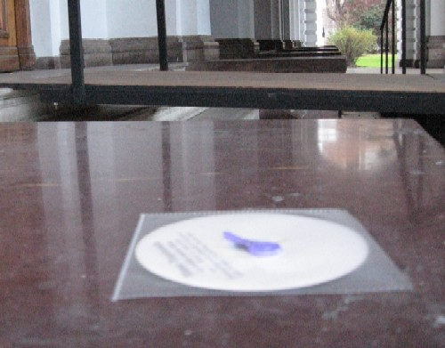
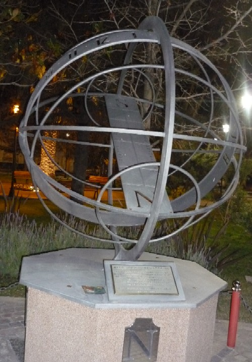
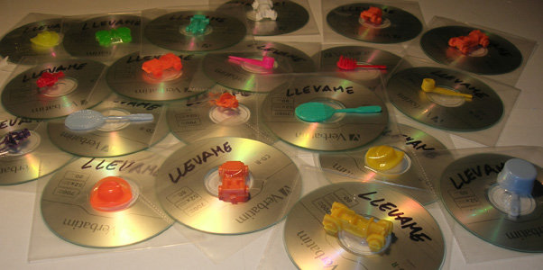
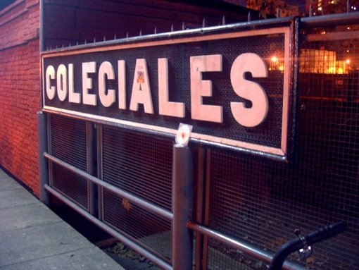
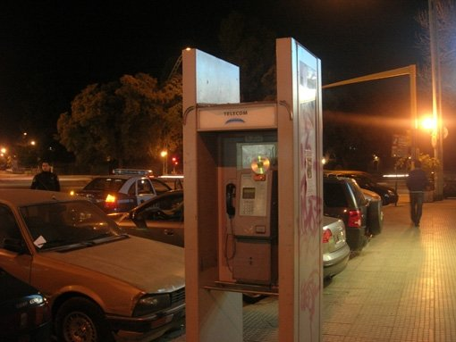
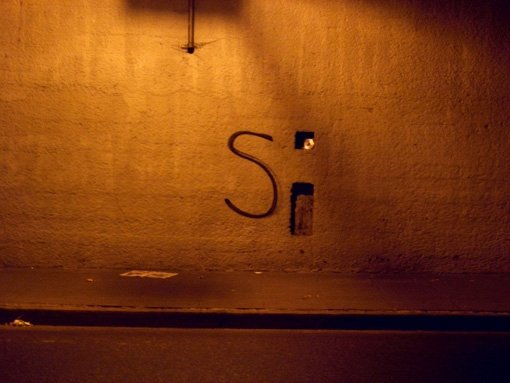
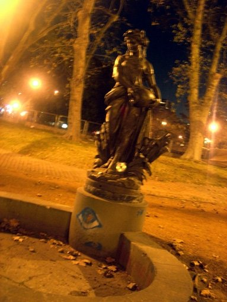

Un ejemplar de Sismo Trapisonda junto a la Catedral platense.
Alguien fue al cajero porque necesitaba plata y en vez de eso se encontró con... esto.
En la entrada de la Municipalidad platense, para que Bruera no crea que nos olvidamos de él.
Minatitlán
Disculpa, voy a hacer un llamad... ¡ooooooh!
En una cancha de volley. En México no abundan los topos, así que tuvimos que emplear seres humanos, cuyos pies se ven en la imagen.
San Rafael

Hermosa plaza... y, por una vez, con sorpresa.

Este CD está bastante entusiasmado.

Y éste se la re banca (cuack).
¿Adónde ir a buscar Sismo Trapisonda? ¿Al sur? ¿Al norte? No, acá mismo la tenés.
Buenos Aires y zona Norte
Todo listo para salir a bombardear...
Es una estación de tren... ALGUIEN tiene que haber visto ese CD.
Voy a hacer un llamado... (reprise)

Una paradita para tomar aire y encontrarse con la sorpresa.
Atención Vicente López: Sí, efectivamente. Es Sismo Trapisonda.
Las Barrancas de Belgrano, bombardeadas.